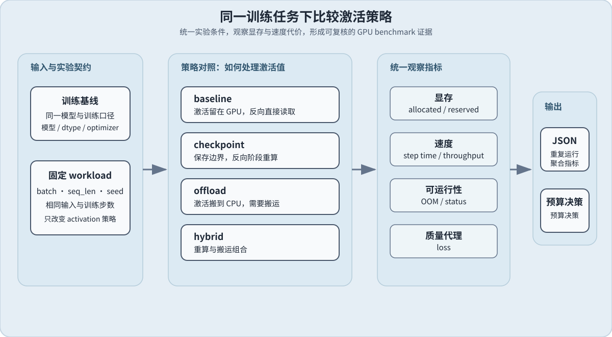

76. Activation Checkpoint Offload Benchmark | Activation / Checkpoint / Offload 对比项目
难度： Hard | 环境： CPU 可完成正确性验证；GPU 用于策略 benchmark | 标签： 显存优化, Checkpoint/Offload, 基准对比 | 目标人群： 准备比较训练显存策略的学习者
本节导读
本节承接 73 的 baseline，比较 checkpoint、offload 和组合方案在同一训练 workload 下的实际代价。主线报告固定模型、输入和训练口径；高压力 workload、不同 seq_len 或 dtype 属于扩展，必须单独记录。结果交给 75 做预算决策，本节不直接裁决。
主责与复用边界： 本项目主责是训练侧 activation 策略的同口径比较；73 提供 baseline，75 负责预算决策，74 负责 trace 解释。推理 KV Cache、量化格式和分布式切分不在本项目内重复实现。
运行提示：先查看使用指南中的项目环境预检与安装说明，再打开真实 GPU 开关。CPU 路径只检查正确性；真实 GPU 路径必须先通过预检。
关键词： activation, checkpoint, offload, memory, benchmark
展开官方原理、图解与任务要求
前置阅读
导语： 先完成 checkpoint、offload 等训练侧显存机制学习，并阅读 73 了解统一测量口径，再进入这个项目；本节默认你已经知道这些技巧各自怎么省显存，重点转向在同一训练任务下测量哪种方案更值。
相关阅读
导语： 完成 checkpoint / offload 对照并保存报告后，先把结果交给 75 完成训练侧预算决策，再由 74 使用 profiling 对显存优化方案做端到端最终验证。
Step 1：显存策略与机制假设
训练前向过程中会产生中间激活值，反向传播需要再次读取其中一部分。四种策略的区别，就是决定这些激活值留在哪里、是否重新计算，以及是否在 CPU 和 GPU 之间搬运。Step 1 先明确实验目标和对照条件，再用图片理解策略差异。
| 项目内容 |
CPU：机制验证 |
GPU：真实对照 |
实验约定 |
| 实验目的 |
用小型张量检查四种策略的 loss、gradient 和 backward 语义 |
在同一训练 workload 下比较策略的显存收益与性能代价 |
关注激活显存是否下降，以及速度和质量是否可接受 |
| 实验输入 |
使用固定张量和统一 loss，观察 saved tensors 或梯度结果 |
使用同一模型、随机输入、batch、seq_len、optimizer 和 seed |
策略之间只改变 activation 的保存方式 |
| 实验对象 |
不加载真实模型；检查 baseline、checkpoint、offload、hybrid 的机制函数 |
默认使用 73 的模型和 workload，执行相同的训练 step |
不把 CPU 正确性结果当作真实显存收益 |
| baseline |
激活值留在 GPU 的参照语义 |
记录 step time、吞吐、peak allocated、peak reserved、loss 和 OOM |
作为其他策略的显存和速度基线 |
| checkpoint |
检查选定边界保存、其余部分重算的梯度语义 |
测量重算后的显存峰值和训练速度 |
用额外计算换取激活驻留空间 |
| offload |
检查部分 backward 所需张量保存到 CPU 后仍能完成反向 |
测量 CPU-GPU 搬运、同步、显存和速度代价 |
用带宽、同步和 CPU 内存换取 GPU 空间 |
| hybrid |
检查重算与部分搬运同时存在时的结果正确性 |
测量两类代价叠加后的显存和吞吐 |
只有在单一策略不足时再作为折中方案比较 |
| 实验输出 |
输出机制检查、loss 和 gradient 结果 |
输出每种策略的状态、显存、速度、loss、OOM 和 JSON 报告 |
后续由 75 根据预算条件进行筛选 |
表中的 CPU 路径回答“策略实现是否保持训练语义”，GPU 路径回答“在当前 workload 下是否值得使用”；表内策略描述是待验证的机制预期，不是实测结论。

<div align="center"><strong>后续实验比较 GPU 显存、训练速度、可运行性和 loss。</strong></div>
Step 2：比较口径与实验协议
固定比较条件，只改变显存策略；不同 workload 或 dtype 必须另存报告。
| 项目 |
固定内容 |
目的 |
| 模型与输入 |
同一模型、随机输入、标签和初始化 seed |
保证策略间训练任务一致 |
| 训练配置 |
optimizer、学习率、训练步数 |
排除训练过程差异 |
| workload |
batch、seq_len、warmup、iters、seed |
保证压力和统计口径一致 |
| 候选策略 |
baseline、checkpoint、offload、hybrid |
形成可比较集合 |
CPU 正确性检查和 GPU benchmark 是两条独立路径：前者检查 loss、gradient 和 step 语义，后者采集真实显存、吞吐和 OOM。它们共享策略定义与比较口径，但 GPU 运行不要求先执行 CPU 题目区。固定随机输入只保证策略间可比，不代表真实数据集上的训练质量。Gradient Accumulation 不放入本节核心四策略；如果要比较，必须固定 effective batch 并另存扩展报告。
Step 3：指标与项目判定
显存最低的方案不一定最值得采用；必须同时检查容量、速度和训练状态。
| 指标 |
含义 |
用于判断 |
| peak allocated |
张量实际达到的显存峰值 |
观察显存收益 |
| peak reserved |
allocator 保留的显存峰值 |
观察缓存和碎片影响 |
| step time / samples/s |
重算、搬运和同步的时间代价 |
观察吞吐损失 |
| val loss / OOM |
训练质量和可运行性 |
过滤不可接受方案 |
报告中可用 memory_saving = baseline_peak - candidate_peak 和 throughput_ratio = candidate_throughput / baseline_throughput 表达取舍。accept 还要求候选未 OOM、显存和吞吐满足预算、质量不越过阈值，并达到有效显存收益；否则根据问题进入 tune 或 reject。最终预算裁决交给 75。
Step 4：动手实战（CPU-first）
要求： 请补全下方三个函数：检查预算与质量阈值、汇总 baseline / checkpoint / offload / hybrid 候选，并输出 accept / tune / reject。CPU 题目区验证决策逻辑；Step 5 独立使用相同口径采集 GPU 报告。
题目与测试代码 · Cell 8
# 3 个核心 TODO：预算检查、候选汇总、项目结论
# 目标：把 baseline / checkpoint / offload / hybrid 的方案比较收束成一份项目报告。
# CPU 题目区只验证预算与决策逻辑；真实策略、saved tensors、重算和搬运代价属于 GPU 实验。
def validate_strategy_budget(budget: Dict[str, float], quality_floor: Dict[str, float]) -> Dict[str, object]:
"""检查显存上限、吞吐下限和质量上限是否完整且合法。
返回 is_valid、missing_keys 和 invalid_keys；不负责判断某个策略是否最优。
"""
# TODO 1：定义 required_budget_keys、required_quality_keys。
# 提示：至少检查 memory_cap_mb、min_samples_per_s、max_val_loss。
# 变量示例：budget_missing = ???、quality_missing = ???、invalid_keys = ???。
raise NotImplementedError("请先完成 TODO 代码！")
def summarize_memory_strategy_candidates(candidates: List[Dict[str, float]], budget: Dict[str, float], quality_floor: Dict[str, float]) -> Dict[str, object]:
"""按预算和质量门槛筛选四类显存策略候选。
返回候选数量、可行数量、可行名称、最佳候选和显存节省；OOM 或缺失指标
不能被当作普通的零值。
"""
# TODO 2：遍历 candidates，分别计算每个候选的可行性。
# 提示：变量示例：memory_ok = ???、throughput_ok = ???、quality_ok = ???、
# is_feasible = ???；baseline_peak = ???；memory_saving = ???。
# checkpoint 节省 activation 驻留，offload 还要承担 CPU-GPU 搬运代价。
raise NotImplementedError("请先完成 TODO 代码！")
def decide_memory_strategy_project(summary: Dict[str, object]) -> Dict[str, object]:
"""根据可行候选和显存收益输出 accept、tune 或 reject。
accept 仅表示当前 workload 和预算下值得继续保留，不表示普遍有效。
"""
# TODO 3：读取 feasible_count、best_candidate、memory_saving 和吞吐保留率。
# 提示：变量示例：has_feasible = ???、meaningful_saving = ???、
# decision = ???、reason = ???、next_action = ???。
# 没有可行候选时 reject；可行但节省不显著时 tune。
raise NotImplementedError("请先完成 TODO 代码！")
题目与测试代码 · Cell 9
# 测试你的实现
def test_memory_strategy_project():
try:
budget = {'memory_cap_mb': 12000.0, 'min_samples_per_s': 6.0}
quality_floor = {'max_val_loss': 1.15}
check = validate_strategy_budget(budget, quality_floor)
assert check['is_valid'] is True, '预算检查应通过'
assert check['missing_keys'] == [], '完整预算不应缺字段'
missing = validate_strategy_budget({'memory_cap_mb': 12000.0}, quality_floor)
assert missing['is_valid'] is False, '缺少吞吐门槛时应拒绝预算配置'
assert 'min_samples_per_s' in missing['missing_keys'], '应指出缺少的预算字段'
candidates = [
{'name': 'baseline', 'peak_memory_mb': 18000.0, 'samples_per_s': 8.0, 'val_loss': 1.06},
{'name': 'checkpoint', 'peak_memory_mb': 11800.0, 'samples_per_s': 6.6, 'val_loss': 1.08},
{'name': 'offload', 'peak_memory_mb': 10500.0, 'samples_per_s': 5.2, 'val_loss': 1.09},
{'name': 'hybrid', 'peak_memory_mb': 9800.0, 'samples_per_s': 6.1, 'val_loss': 1.11},
]
summary = summarize_memory_strategy_candidates(candidates, budget, quality_floor)
assert summary['feasible_count'] == 2, '应有两个方案满足预算与质量'
assert summary['best_candidate'] == 'hybrid', 'hybrid 应成为最省显存的可行方案'
decision = decide_memory_strategy_project(summary)
assert decision['decision'] == 'accept', '可行且最优的方案应被接受'
hard_summary = summarize_memory_strategy_candidates(
[
{'name': 'checkpoint', 'peak_memory_mb': 13000.0, 'samples_per_s': 6.4, 'val_loss': 1.10},
{'name': 'offload', 'peak_memory_mb': 11000.0, 'samples_per_s': 4.8, 'val_loss': 1.12},
],
budget,
quality_floor,
)
hard_decision = decide_memory_strategy_project(hard_summary)
assert hard_decision['decision'] == 'reject', '没有满足预算与质量时应 reject'
edge_summary = summarize_memory_strategy_candidates(
[
{'name': 'oom_candidate', 'status': 'oom'},
{'name': 'incomplete', 'peak_memory_mb': 10000.0},
],
budget,
quality_floor,
)
assert edge_summary['oom_count'] == 1, 'OOM 候选应单独计数'
assert edge_summary['invalid_count'] == 1, '缺少指标的候选应标记为 invalid'
assert decide_memory_strategy_project(edge_summary)['decision'] == 'reject', '没有可行策略时应 reject'
print('所有测试通过！')
except NotImplementedError:
print('请先完成 TODO 代码！')
raise
except AssertionError as e:
print(f'测试失败: {e}')
raise NotImplementedError('请先完成 TODO 代码！') from e
except Exception as e:
print(f'发生错误: {e}')
raise NotImplementedError('请先完成 TODO 代码！') from e
test_memory_strategy_project()
本区由当前 Notebook 题目区生成。下面的精讲用于概念练习；回到 Notebook 时以本区的函数签名、TODO 和测试为准。参考答案及可选实验请在 Notebook 中查看。